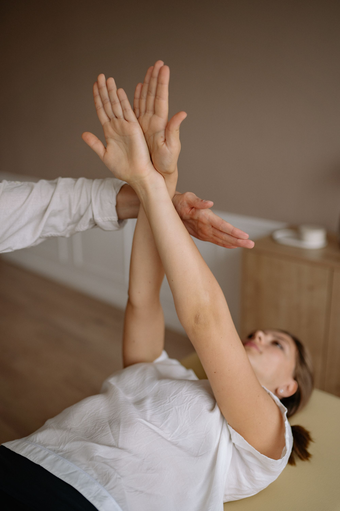
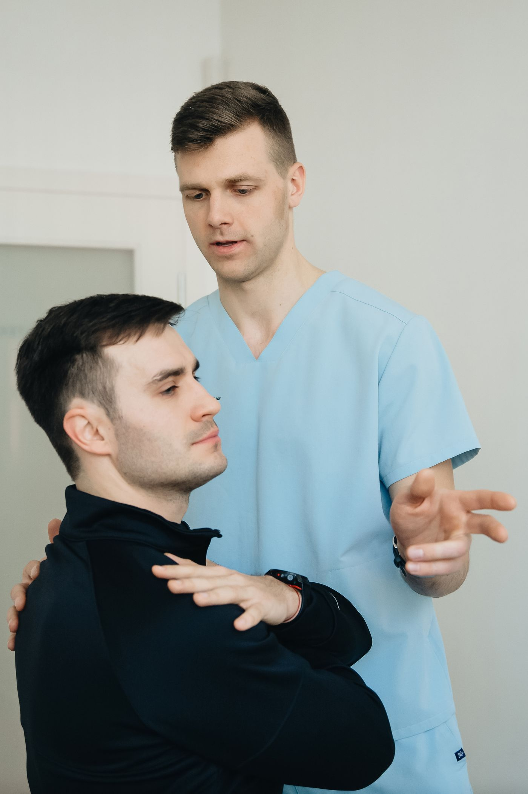
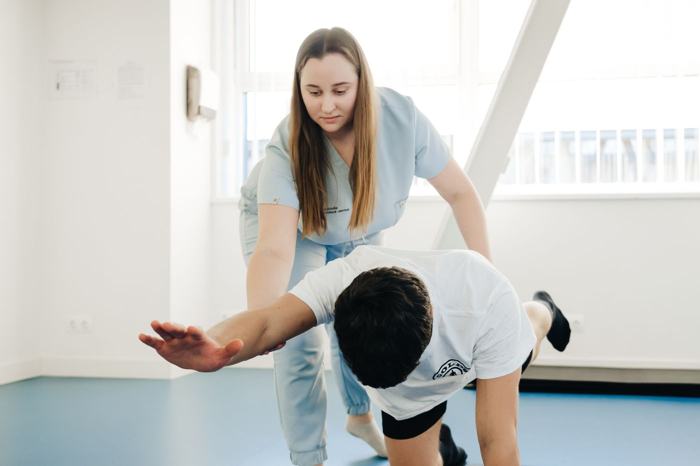
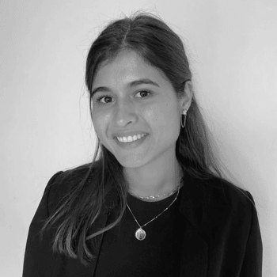
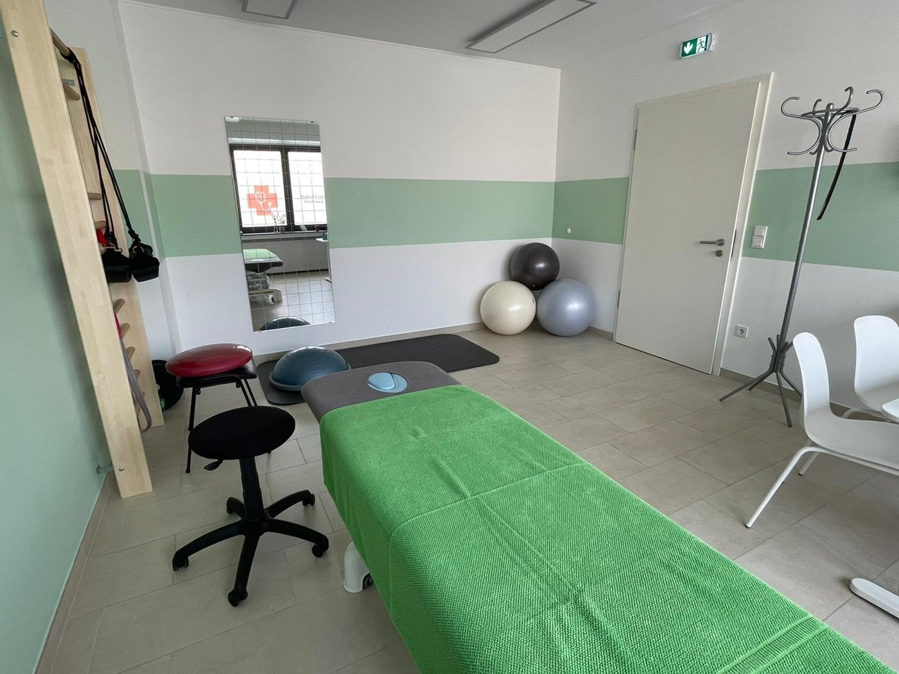
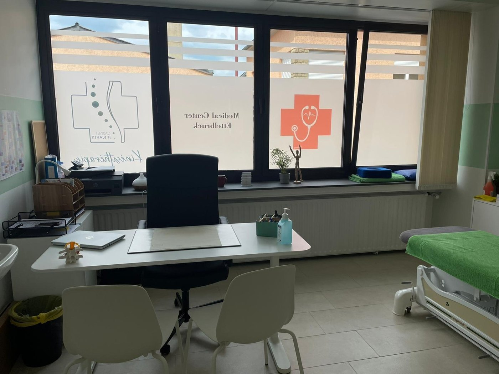
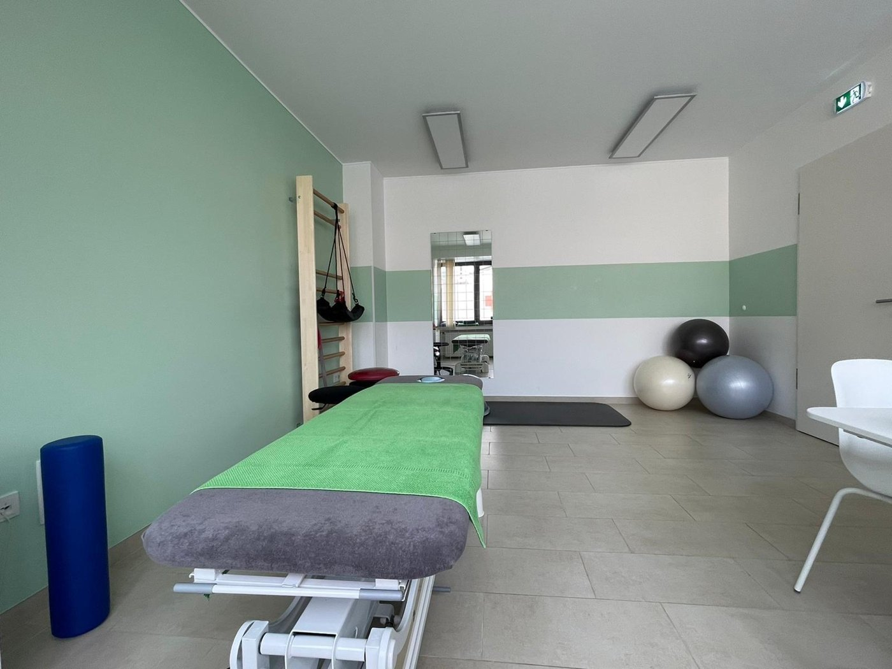
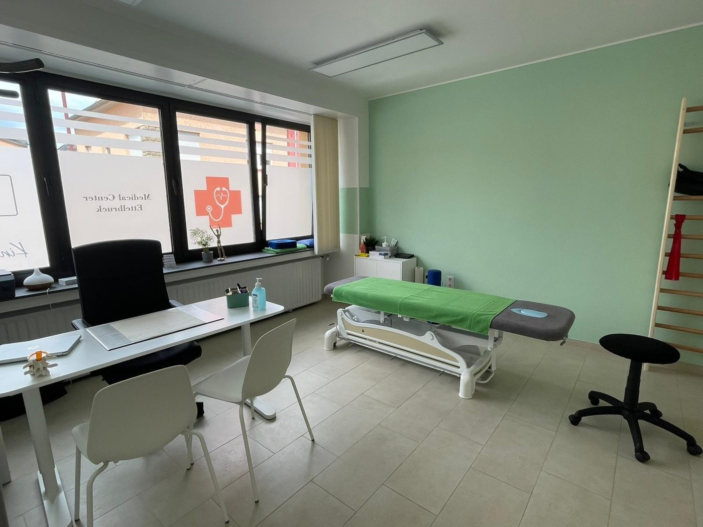

Le soin du mouvement, à vos côtés.
Kinésithérapie, ostéopathie et thérapies manuelles au Medical Center d'Ettelbruck. Une équipe diplômée qui vous accompagne, au cabinet comme à domicile.
Une équipe qui sera présente à vos côtés — pour retrouver le mouvement, soulager la douleur et prévenir la rechute.
Au cœur d'Ettelbruck, le cabinet Naets — Van Acker réunit des kinésithérapeutes et ostéopathes diplômés autour d'une même idée : un soin attentif, personnalisé et humain. Chaque prise en charge commence par une écoute, puis un plan de traitement adapté à votre rythme et à vos objectifs.
De la thérapie manuelle douce à la rééducation neurologique et sportive, nous mettons un large éventail de techniques au service de votre récupération — et nous nous déplaçons à domicile lorsque c'est nécessaire.

Un soin sur mesure, technique après technique.
Nous choisissons, parmi un large éventail de méthodes manuelles et de rééducation, celles qui correspondent vraiment à votre situation.
Strain counter-strain (Jones)
Technique douce de traitement des douleurs musculo-squelettiques par positionnement articulaire.
Rééducation de l'ATM
Articulation temporo-mandibulaire : mastication, occlusion dentaire, bruxisme et placement de la langue.
Ostéopathie rythmique
Méthode de soin ayant pour objectif le traitement des patients à partir du tissu conjonctif.
K-taping
Un tape élastique conçu spécialement pour soulager douleurs de dos, contractions musculaires et problèmes articulaires.
Fasciathérapie
Méthode manuelle douce et non manipulative, qui vise à décrisper et réguler la tension des fascias.
L'école du dos
Éducation physique et exercices spécifiques pour rendre leur autonomie aux patients souffrant de problèmes vertébraux.
Kinésithérapie neurologique
Prise en charge des patients atteints d'une pathologie du système neurologique (AVC, Parkinson, etc.).
Kinésithérapie du sport
Prévention, récupération et revalidation locomotrice pour reprendre l'activité en confiance.
Drainage lymphatique
Drainage lymphatique manuel et travail sur les trigger points pour relancer la circulation et détendre les tissus.

« Chaque patient avance à son rythme. Notre rôle est d'être là, à chaque étape. »
Des mains expertes, une même exigence.
Kinésithérapeutes et ostéopathes diplômés, réunis pour vous offrir un suivi complet et attentif.
R. Naets
À l'origine du cabinet d'Ettelbruck, avec une approche du soin centrée sur l'écoute et la thérapie manuelle.
Van Acker
Partenaire du cabinet, pour une prise en charge kiné et ostéo coordonnée autour du patient.

Aylin Kutlu
Kinésithérapie du sport, rééducation périnéale et du rachis, drainage lymphatique manuel et trigger points.




Un cadre pensé pour votre récupération.
Au Medical Center d'Ettelbruck
Un cabinet accessible et bien situé, 14 Rue Prince Jean.
Visites à domicile
Lorsque le déplacement est difficile, nous venons vous soigner chez vous.
Sur rendez-vous
Une prise en charge organisée à l'avance, sans attente.
Un soin humain
Une équipe diplômée, présente du premier rendez-vous à la reprise.
Prenons rendez-vous.
Une question, une douleur, un suivi à organiser ? Appelez-nous ou écrivez-nous, nous vous répondrons avec plaisir.
- Téléphone
- Adresse14 Rue Prince Jean, L-9052 Ettelbruck